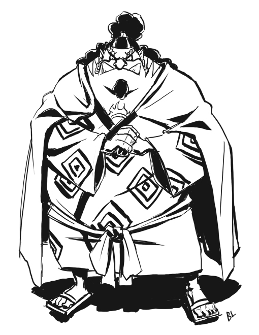

"Knight of the Sea" Jinbe[1] is the helmsman of the Straw Hat Pirates and one of the Senior Officers of the Straw Hat Grand Fleet.[3] He is the tenth member of the crew and the ninth to join, doing so during the Wano Country Arc.[16] Jinbe is a whale shark fish-man and a powerful master of Fish-Man Karate. His dream is to fulfill his former captain Fisher Tiger's dying wish of coexistence and equality between humans and fish-men. He was a member of the Sun Pirates, eventually becoming its second captain after the death of their original captain, Tiger.[9] He eventually became one of the Seven Warlords of the Sea, though he resigned during the Summit War of Marineford.[5][9] Vegapunk later cloned Jinbe as one of the Seraphim, S-Shark, to replace the Warlords.[17] Prior to and amidst said war, Jinbe befriended Monkey D. Luffy, and two years later allied with him and his crew to prevent the New Fish-Man Pirates' coup d'état against the Ryugu Kingdom's Neptune Royal Family. Luffy thereafter invited him to join the Straw Hat Pirates, but Jinbe held it off until severing ties with Big Mom during the Whole Cake Island Arc.[2] After staying behind in Totto Land to protect the Sun Pirates from Big Mom's wrath, Jinbe returned to the Straw Hats during the Wano Country Arc, officially announcing his status as a member of the crew.[16] He first gained a bounty of Beli76,000,000 due to him being a member of the Sun Pirates. It was later increased to Beli250,000,000 after Jinbe became the new captain of the Sun Pirates before it was frozen after he joined the Seven Warlords. Upon resigning his position as a Warlord at the Summit War of Marineford, his bounty was reinstated at Beli438,000,000.[13] Following the Raid on Onigashima, his bounty was increased to Beli1,100,000,000.[3]
For more info visit this page